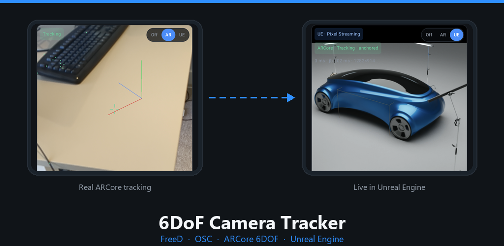
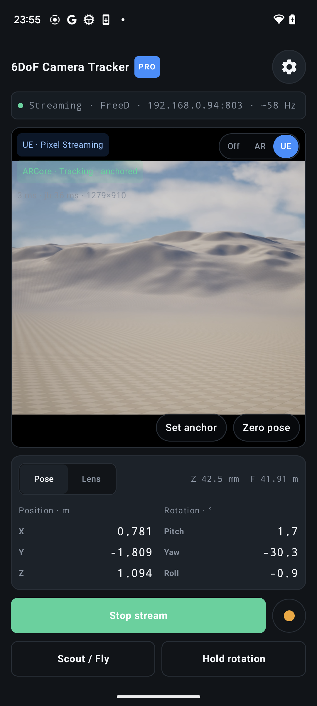
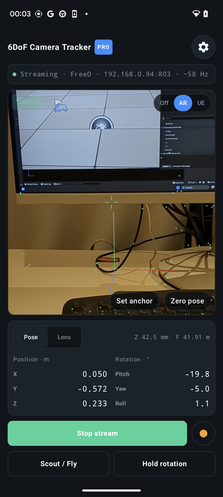
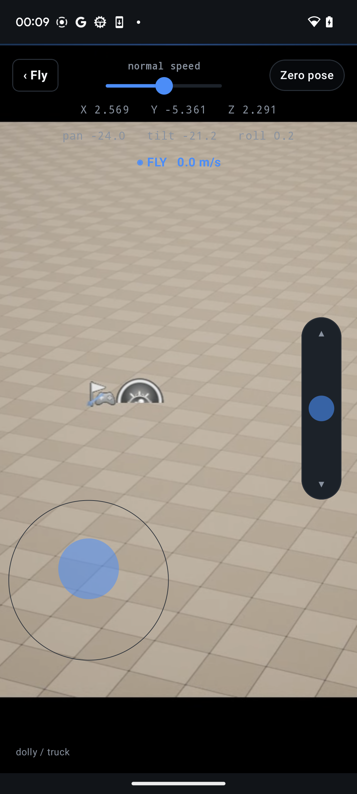
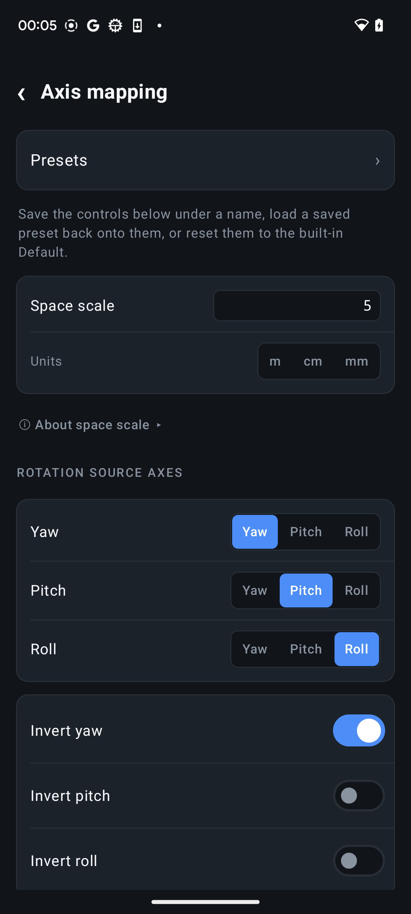
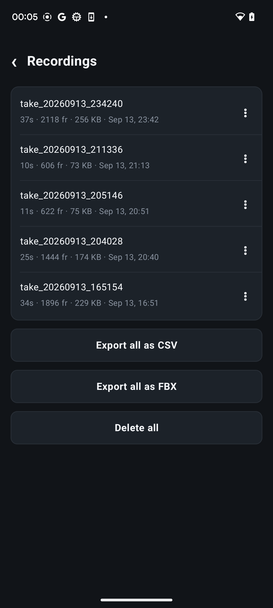

FreeD and OSC output
Send pose and lens data straight to Unreal Engine, broadcast graphics systems, and receivers that already support established protocols.
Android camera tracking
Turn an Android phone into a live camera tracker for Unreal Engine, virtual production, previs, and real-time broadcast workflows.

Stream camera position, orientation, and lens data over native FreeD or OSC. See the Unreal render on the phone, record takes, or fly the virtual camera independently with Scout mode.
Built for real-time work
Send pose and lens data straight to Unreal Engine, broadcast graphics systems, and receivers that already support established protocols.
Track position and rotation with the phone camera and sensors. Simple, surface-trackable, and printed-marker anchor modes help manage drift.
Receive a live Unreal Pixel Streaming feed over WebRTC and view the rendered scene on the same phone that is driving the camera.
Add a virtual fly-camera offset on top of ARCore or IMU tracking using a gesture-based shove control or a full-screen joystick.
Match receiver coordinates with axis presets, custom mappings, space scale, and calibrated zoom, focus, and iris channels.
Record takes independently of streaming, review them later, export CSV, and use Pro playback, FBX, and raw-IMU export tools.
On set
Switch between the real AR camera and the Unreal viewfinder without leaving the tracking screen. Live status, pose, lens data, streaming, recording, and hold controls stay close at hand.



Flexible workflow
Configure the target, protocol, camera ID, rate, mapping, and physical scale. The built-in Unreal preset gives you a useful starting point, while custom presets can be saved for different receivers and stages.


Lite and Pro
Lite
Configure, calibrate, record, and test your receiver with live streaming sessions of up to five minutes.
Pro
Remove the session limit and unlock higher rates, multi-destination output, smoothing, take playback, FBX export, and raw-IMU tools.
Monthly subscription or one-time Lifetime purchaseRequirements
Help shape the release
We are looking for Unreal Engine artists, virtual production teams, technical artists, and broadcast users to test different Android devices, receivers, and network setups.